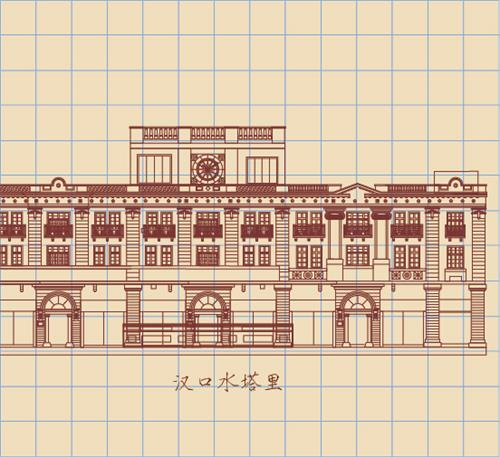

所在街区：江汉区中山大道539号 建筑风格：古典主义 建造年代：1909年 现存情况：消防标志性建筑物

汉口水塔于清光绪三十四年(1908年)破土动工，宣统元年(1909年)竣工，由英国工程师穆尔设计监制。水塔现位于汉口中山大道前进五路闹市区。水塔原来是商办汉镇既济水电股份有限公司宗关水厂的一大配套设施，为正八角形七层建筑：主体六层，其西南突出的楼梯间，上有钟楼，超出主体，为第七层。楼梯间有木制转梯，可登钟楼(瞭望台)，瞭望台高4．58米。
水塔是汉口近代消防标志性建筑物，在很长一段时期，它承担着消防给水和消防瞭望的双重任务。水塔建成后，汉口各主要街巷陆续安装了消防水门，从而有效地改善了救火的水源问题。